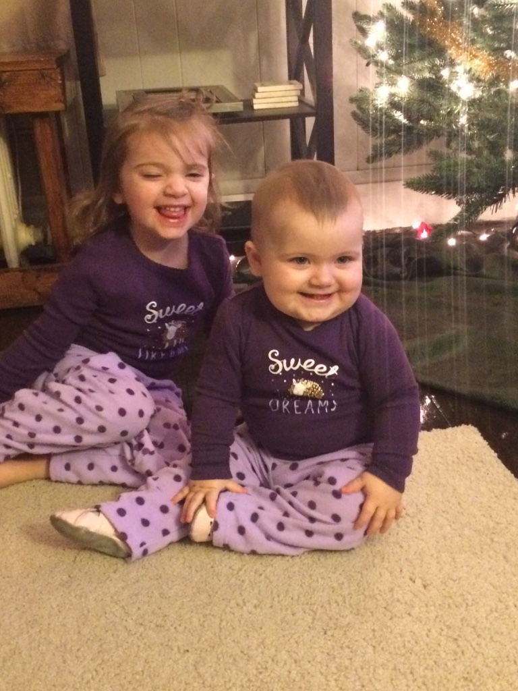
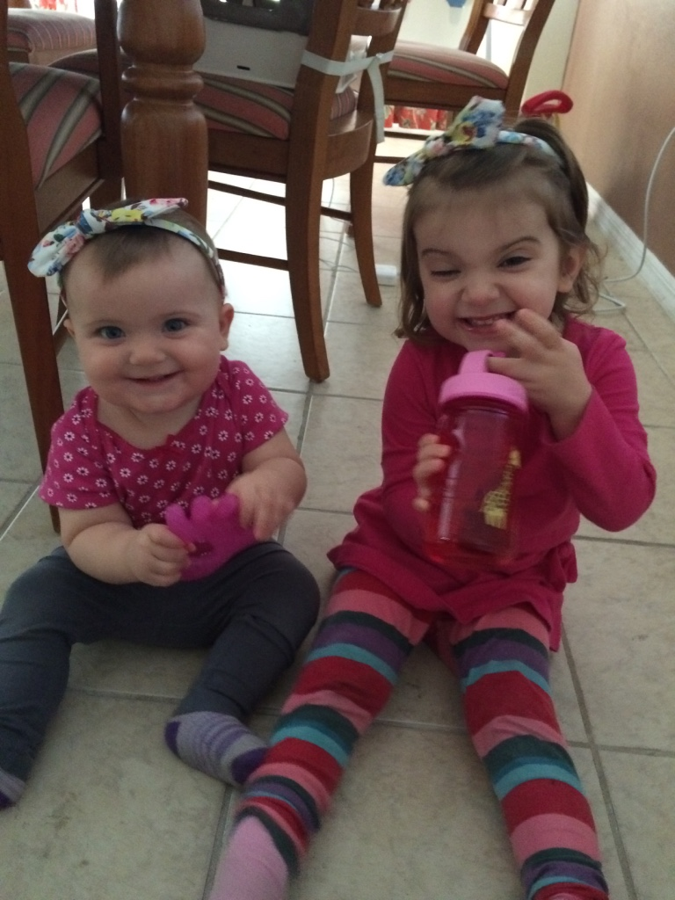
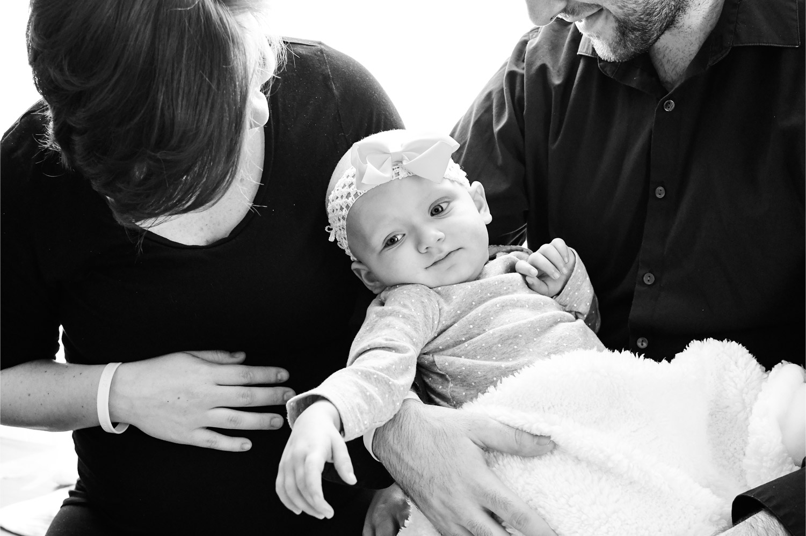

Emma's Story

Early on the morning of March 27, 2015, God gave us our giant, blue eyed baby girl, Emma Grace. Before we left the hospital, a nurse brought Emma to us and stated very matter-of-fact, “This baby has got a powerful set of lungs!” Her loud voice and piercing blue eyes were traits for which she would become well known.
Almost exactly one year later on March 25th, 2016, we made an appointment for Emma with her pediatrician, as she had been having a cough that refused to go away for the better part of 2 weeks. God was kind that we were able to get in within a few minutes. Visually, Emma looked completely healthy, walking around, laughing and smiling. However, when her doctor listened to her chest, we were told no air flow was heard from Emma's left lung. We were sent to a local clinic for Emma to have an x-ray taken of her lungs. The x-ray showed that her left lung was completely whited out, which we were told could be 1 of 2 things: 1. fluid from pneumonia or 2. in a “very rare and unlikely case” a tumor. Well, like most parents, we didn't even consider that it could be a tumor, and promptly put that out of our minds.
We drove up to Golisano Children's Hospital at Upstate in Syracuse, NY to have further testing done and to find out exactly what was going on in Emma's lungs. There she had more x-rays done as well as an ultrasound. You'll pick up very quickly, but God was kind to show us repeatedly that His hand was on her life, no matter what happened. Based on the tests, it was determined that Emma had fluid in her lungs from pneumonia. Throughout the next 12 days, Emma underwent surgery to drain the fluid and heal from the surgery. Upon being discharged, we were told to come back if anything related to Emma's breathing seemed suspicious.
We were home for all of one week before we noticed Emma's breathing had become more labored, and were admitted back into Golisano Children's Hospital. At first, the consensus was that fluid from pneumonia had returned, whiting out her lung and preventing air from flowing. After another round of tests, including a second ultrasound, a discrepancy was found between the original ultrasound and the one just performed. They found a mass.
Emma had a biopsy surgery performed the next day, after which we were told it would take up to a week to find a diagnosis. The following day, on April 21st, Emma was diagnosed at 13 months old with stage 3 PleuralPulmonary Blastoma (PPB), a very rare form of lung cancer. We were told that only 40 people per year, nation wide, are diagnosed with PPB. Out of those diagnosed, a majority are stage 1, with even fewer being diagnosed with stage 3.
I will never forget the look on the oncologists face as she told us the news, fully and rightfully expecting us to completely break down. But we didn't. We had an overwhelming feeling of peace come over us, and said, “ok.”

In early May, Emma was supposed to start her first round of chemotherapy. Due to the size of the tumor (roughly 4 inches x 4 inches in her chest), her left lung had collapsed, and the function of right lung was significantly deteriorating. The night the chemotherapy started, she ended up being put on life support, as her oxygen levels plummeted and her overworked right lung gave out. Emma spent the next 19 days sedated in the PICU.

Over the next year, Emma went through numerous tests, treatments (both traditional and non-traditional), surgeries, and many other medical procedures. In December 2016, Emma's tumor had grown back, and in January 2017 she was released from the hospital to be at home, where she stayed until she went home to be with Jesus on February 7th, 2017.
Throughout Emma's fight, we were regularly in and out of the hospital for 10 months. During that time, we began to see areas of need, specifically relating to the families of the children who were admitted to the hospital. In addition to having tangible needs, there was also a lack of and need for hope. After Emma's heaven-going, we are making it our mission to come alongside the parents and families of severely ill children, to provide them with hospital necessities, and give them hope - Emma's hope - which is Jesus Christ.
